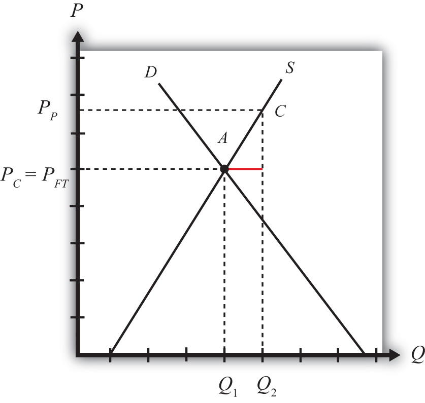
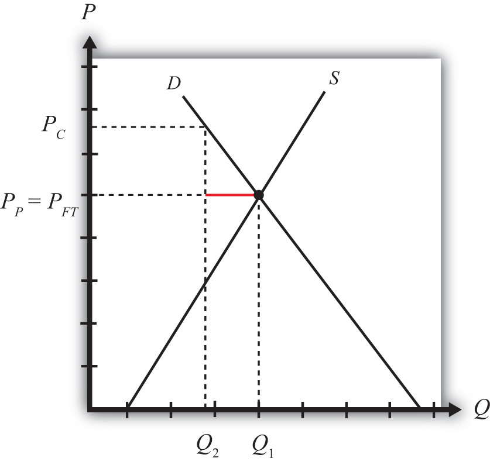
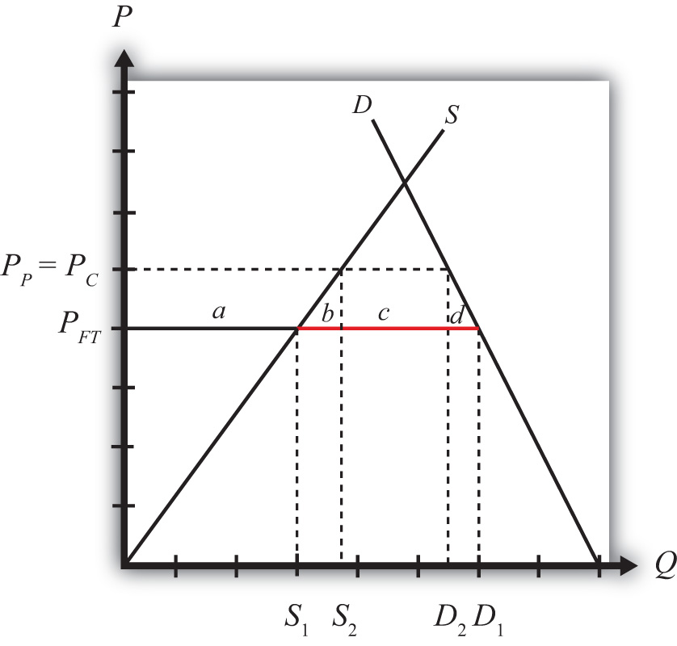

Increasingly, at international forums where policymakers are discussing international trade issues, the topic of discussion is not what trade policies countries are using but rather what domestic policies are in place. The reason is that in our interconnected and globalized world, the domestic policies affecting energy, the environment, labor markets, health, and many other matters will affect not only what happens at home but also what, and how much, is traded and invested, and thus the outcomes for producers and consumers abroad. In short, domestic policies have international repercussions.
This chapter explores several simple domestic policies and investigates how these policies can affect trade flows with other countries. It also examines the welfare effects of these policies and concludes with a very important insight: that trade policies can be duplicated with a combination of several domestic policies. The implications of this notable insight are explored.
Policy analysis in international trade theory generally emphasizes the analysis of trade policies specifically. Trade policyAny policy that directly affects the flow of goods and services between countries, such as import tariffs, import quotas, voluntary export restraints, export taxes, and export subsidies. includes any policy that directly affects the flow of goods and services between countries, including import tariffs, import quotas, voluntary export restraints, export taxes, export subsidies, and so on. During the 1980s and 1990s, as trade barriers came down, especially between developed countries, more and more attention was brought to the effects of certain domestic policyAny type of tax or subsidy policy or any type of government regulation that targets the domestic behavior of firms or consumers. types, including their international effects.
For example, there is increasing concern in the United States about the environmental and labor policies of many U.S. trade partners. With regard to environmental policies, some have argued that more lenient environmental regulations in many less-developed countries give firms in those countries a competitive edge relative to firms operating in the United States. The same argument is used in regard to labor practices. Many U.S. industry representatives argue that low foreign wages, lenient occupational safety regulations, and in some cases the use of child labor or prison labor give some countries a competitive edge in international markets.
In general, for small countries, domestic policies will affect domestic prices, production levels, trade flows, and welfare but will not affect foreign prices, production levels, and welfare. This means that countries like the United States may not need to worry much about domestic practices in very small countries. However, when a country is large in international markets, domestic policies will affect prices, production levels, profits, and welfare, both domestically and internationally.
In general, any type of domestic tax or subsidy policy, or any type of government regulation that affects the behavior of firms or consumers, can be classified as a domestic policy. There are a wide variety of these policies, any of which can have an impact on international trade.
For example, income taxes are levied on wages and capital incomes of individuals. Profit taxes are levied on the profits of businesses. Sales taxes are generally levied as a percentage of retail sales. In the United States, these taxes are popular within individual states. Excise taxes are specific taxes on particular commodities such as gasoline, alcohol, or cigarettes.
Some domestic government policies take the form of quantity restrictions. An example is controls on the amount of pollutants that industries can emit. Also, in most countries there are restrictions on the production and sale of many drugs. The United States prohibits the use of recreational drugs like marijuana and cocaine, as well as pharmaceuticals that have not been approved by the U.S. Food and Drug Administration.
Governments also provide subsidies for many purposes. They disburse research and development (R&D) subsidies to high-technology industries and encourage R&D through their defense spending contracts. Governments also give out educational subsidies (grants) and subsidize student loans. In agriculture, governments often have elaborate programs designed to raise the incomes of farmers, including the use of price floors, subsidized loans, payments to encourage fallow acreage, and so on. Although many domestic policies are complex regulations, the analysis here will focus on simple domestic tax and subsidy policies applied either to production or to consumption. Many of the insights learned in this analysis, however, do carry over to more complex situations.
One of the most important distinctions between domestic policies and trade policies is the effect on prices. When a trade policy, such as a tariff, is implemented, a price wedge is driven between the domestic price and the foreign price of the good. The domestic producers of the product will receive a higher price for the goods they sell, and domestic consumers will pay the same higher price for the goods they purchase.
In the case of domestic policies, a wedge is driven between domestic prices for the good. For example, if a domestic production subsidy is implemented by a small country, it will raise the price producers receive when they sell their good (we’ll call this the producer priceThe price received by producers, inclusive of any subsidies collected or taxes paid.), but it will not affect the price paid by domestic consumers when they purchase the good (we’ll call this the consumer priceThe price paid by consumers, inclusive of any subsidies collected or taxes paid.). The foreign price would remain equal to the consumer price in the domestic country. Note that we can also call the consumer price the “market price” since this is the price that would appear on a price tag in the domestic market.
If a domestic consumption tax is implemented by a small country, it will raise the domestic consumer price of the good but will not affect the domestic producer price. The foreign price will remain equal to the producer price in this case.
In general, trade policies will always maintain the equality between domestic consumer and producer prices but will drive a wedge between domestic prices and foreign prices. Domestic policies (at least production and consumption taxes and subsidies), in contrast, will drive a wedge between domestic consumption and production prices.
One of the first points made in this section is that a domestic policy can be the basis for trade. In other words, even if trade would not occur otherwise between countries, it is possible to show that the imposition of domestic taxes or subsidies can induce international trade, even if a country is small in international markets. Two examples are analyzed.
The first case considers a small country initially in free trade that, by chance, has no desire to export or import a particular commodity. The country then imposes a production subsidy. The subsidy encourages domestic production, but because the country is open to international trade, the domestic consumer price remains the same. Since the price paid by consumers remains the same, so does domestic demand. All the extra production, then, is exported to the rest of the world. Thus a domestic production subsidy can cause a commodity to be exported.
The second case considers the same initial conditions in which a small country in free trade has no desire to trade. In this case, the country implements a consumption tax. The tax raises the price paid by consumers in the domestic market, and this reduces domestic demand. However, because open competition remains with the rest of the world, the domestic producers’ price, and therefore domestic production, remains the same. The excess production over demand would now be exported to the rest of the world. Thus a domestic consumption tax can cause a commodity to be exported.
It would be straightforward to show that a production tax or a consumption subsidy (such as a rebate) could cause a country to import a good from the rest of the world.
If a small country is importing or exporting a commodity initially, a domestic policy will affect the quantity imported or exported; the prices faced by consumers or producers; and the welfare of consumers, producers, the government, and the nation. We consider two examples in this section.
In the first case, we consider a production subsidy implemented by a small country that initially is importing the commodity from the rest of the world. The production subsidy stimulates domestic production by raising the producers’ price but has no effect on the world price or the domestic consumers’ price. Imports fall as domestic production rises.
Producers receive more per unit of output by the amount of the subsidy, thus producer surplus (or welfare) rises. Consumers face the same international price before and after the subsidy, thus their welfare is unchanged. The government must pay the unit subsidy for each unit produced by the domestic firms, and that represents a cost to the taxpayers in the country. The net national welfare effect of the production subsidy is a welfare loss represented by a production efficiency loss. Note, however, that the national welfare loss arises under an assumption that there are no domestic distortions or imperfections. If market imperfections are present, then a production subsidy can improve national welfare (see especially the infant industry argument in Chapter 9 "Trade Policies with Market Imperfections and Distortions", Section 9.5 "The Infant Industry Argument and Dynamic Comparative Advantage").
In the second case, we consider a consumption tax implemented by a small country that initially is importing the commodity from the rest of the world. The consumption tax inhibits domestic consumption by raising the consumers’ price but has no effect on the world price or the domestic producers’ price. Imports fall as domestic consumption falls.
Consumers pay more for each unit of the good purchased, thus consumer surplus (or welfare) falls. Producers face the same international price before and after the tax, thus their welfare is unchanged. The government collects tax revenue for each unit sold in the domestic market, and that facilitates greater spending on public goods, thus benefitting the nation. The net national welfare effect of the consumption tax is a welfare loss represented by a consumption efficiency loss. Note again, however, that the national welfare loss arises under an assumption that there are no domestic distortions or imperfections. If market imperfections are present, then a consumption tax can improve national welfare.
Once the effects of simple domestic tax and subsidy policies are worked out, it is straightforward to show that a combination of domestic policies can duplicate a trade policy. For example, if a country imposes a specific production subsidy and a specific consumption tax on a product imported into the country and if the tax and subsidy rates are set equal, then the effects will be identical to a specific tariff on imports set at the same rate. If a country exports the product initially, then a production subsidy and consumption tax set at the same rates will be identical to an export subsidy set at the same level. Finally, a production tax coupled with a consumption subsidy (a rebate) imposed on a product that is initially exported and set at the same rate is equivalent to an export tax.
These results are especially important in light of recent movements in the direction of trade liberalization. As each new free trade agreement is reached, or as tariff barriers come down because of World Trade Organization (WTO) / General Agreement on Tariffs and Trade (GATT) negotiations, it seems reasonable to expect the expansion of international trade. Indeed, it is the effect that trade expansion will have on economic efficiency and growth that inspires these agreements in the first place. However, because trade policies are equivalent to a combination of domestic policies, it is possible to thwart the effects of trade liberalization by adjusting one’s domestic policies.
Thus suppose a country negotiates and implements a free trade agreement with another country. As shown in our economic models, trade liberalization is likely to benefit some groups at the expense of others. Two main losses arise from trade liberalization. First, import-competing firms would lose out due to the increase in competition from foreign firms. Second, the government would lose tariff revenue.
Groups affiliated with import-competing industries are likely to be reluctant to support a free trade agreement. If these groups (trade associations, labor unions, etc.) are politically powerful, the domestic government may look for ways to reduce the harmful effects of trade liberalization by changing some of its domestic policies. An obvious way to do so would be to offer subsidies of some sort to the industries that are expected to be hurt by the agreement.
The other problem with trade liberalization is that it reduces government revenue. In this era where balanced government budgets are extremely difficult to maintain and where budget deficits are the norm, substantial reductions in government revenue are a serious source of concern. This means that many trade-liberalizing countries are likely to look for ways to mitigate the revenue shortfall. One obvious solution is to raise domestic taxes of some sort.
Although it is unlikely that a country’s adjustments to its domestic policies would completely offset the effects of trade liberalization, it is conceivable that such adjustments would have some effect. Thus it is important for trade negotiators to be aware of the potential for domestic policy substitutions to assure that trade liberalizations have a real effect on trade between the countries.
The equivalency between trade and domestic policies may also be relevant to some of the trade disputes between the United States and Japan. Because of the large trade surpluses Japan had with the United States during the 1980s and 1990s, some people in the United States charged Japan with having excessive barriers to trade. Japan had noted, though, that its average tariff rates were roughly equivalent to tariffs charged by the United States and the EU. In the late 1980s, U.S. policymakers focused on Japan’s domestic policies as the source of trade problems. In particular, the United States noted that Japan’s distribution system and practices such as keiretsu (business groupings) may have been preventing U.S. firms’ access to the Japanese market. This led to discussions known as the “Structural Impediments Initiative.” Although this section does not suggest that such effects were indeed occurring, it does show that domestic policies can have an impact on trade flows between countries. In other words, it is conceivable that a country’s domestic practices and policies could inhibit the inflow of goods into a country and act like tariffs or quotas on imports.
Jeopardy Questions. As in the popular television game show, you are given an answer to a question and you must respond with the question. For example, if the answer is “a tax on imports,” then the correct question is “What is a tariff?”
A domestic production subsidyA payment made by a government to firms in a particular industry based on output or production levels. is a payment made by a government to firms in a particular industry based on the level of output or production. The subsidy can be specified either as an ad valorem subsidy (a percentage of the value of production) or as a specific subsidy (a dollar payment per unit of output). A domestic production subsidy is different from an export subsidy. A production subsidy provides a payment based on all production regardless of where it is sold. An export subsidy, on the other hand, only offers a payment to the quantity or value that is actually exported. An export subsidy is classified as a trade policy, whereas a production subsidy is a domestic policy.
Domestic production subsidies are generally used for two main reasons. First, subsidies provide a way of raising the incomes of producers in a particular industry. This is in part why many countries apply production subsidies on agricultural commodities: it raises the incomes of farmers. The second reason to use production subsidies is to stimulate output of a particular good. This might be done because the product is assumed to be critical for national security. This argument is sometimes used to justify subsidies to agricultural goods, as well as steel, motor vehicles, the aerospace industry, and many other products. Countries might also wish to subsidize certain industries if it is believed that the industries are important in stimulating growth of the economy. This is the reason many companies receive research and development (R&D) subsidies. Although R&D subsidies are not strictly production subsidies, they can have similar effects.
We will analyze the international trade effects of a domestic production subsidy using a partial equilibrium analysis. We will assume that the market in question is perfectly competitive and that the country is “small.” We will also ignore any benefits the policy may generate, such as creating a more pleasing distribution of income or generating valuable external effects. Instead, we will focus entirely on the producer, consumer, and government revenue effects of each policy.
Next, we consider the effects of a production subsidy under two separate scenarios. In the first case, the subsidy is implemented in a country that is not trading with the rest of the world. This case is used to show how a domestic policy can cause international trade. The second case considers the price and welfare effects of a production subsidy implemented by a country that is initially importing the good from the rest of the world.
Jeopardy Questions. As in the popular television game show, you are given an answer to a question and you must respond with the question. For example, if the answer is “a tax on imports,” then the correct question is “What is a tariff?”
This section will show how a production subsidy can cause trade for a small, perfectly competitive, open economy. The analysis indicates that domestic policies can be a cause of trade even in the absence of other reasons for trade. In other words, even if countries were identical with respect to their resource endowments, their technology, and their preferences and even if there were no economies of scale or imperfectly competitive markets, domestic policies could induce trade between countries.
Consider a small open economy with a perfectly competitive industry. Let the domestic market be represented by the supply and demand curves in Figure 8.1 "Inducing Exports with a Domestic Production Subsidy". Suppose initially that free trade is allowed with the rest of the world, but by coincidence (actually by assumption), let the free trade price be exactly equal to the autarky price for the good. This is shown as the price, PFT. This implies that no imports or exports occur, even though there is free trade.
Figure 8.1 Inducing Exports with a Domestic Production Subsidy
Next, suppose that the government of this country offers a specific (per unit) production subsidy to the domestic firms. Let the subsidy rate be set at “s.” This means the government will pay “s” dollars for every unit the domestic firm produces, regardless of where the product is sold.
The subsidy effectively raises the price that the producer receives for each unit of the good produced and sold. At the same time, the subsidy will not affect the domestic price that consumers pay. In other words, the subsidy will cause the price received by producers (the producer price) to rise above the price paid by consumers (the consumer price). The new producer price is labeled PP in Figure 8.1 "Inducing Exports with a Domestic Production Subsidy", while the consumer price, PC, remains equal to the free trade price. Thus PP = PFT + s and PC = PFT. These price changes occur because these prices will allow domestic firms in the small country to maximize their profits in the face of free competition with firms in the rest of the world.
The subsidy will increase domestic production. At the market price PFT, domestic firms were willing to supply to Q1. Once the producer price rises to PP, domestic supply will rise to Q2. Demand would remain the same, however, since the consumer price remains fixed. The difference between domestic supply and demand, Q2 − Q1, represents the level of exports to the rest of the world. Since exports did not exist prior to the subsidy, this is an example in which a domestic policy (a production subsidy) can cause trade (i.e., exports) to occur.
Jeopardy Questions. As in the popular television game show, you are given an answer to a question and you must respond with the question. For example, if the answer is “a tax on imports,” then the correct question is “What is a tariff?”
Domestic policies can affect trade in an industry for a country that is either an exporter or an import-competitor initially. In this example, we consider the price, production, and welfare effects of a production subsidy when the subsidized product is initially imported into the country.
We depict this equilibrium in Figure 8.2 "A Domestic Production Subsidy in a Small Importing Country". The free trade price is given by PFT. The domestic supply is S1, and domestic demand is D1, which determines imports in free trade as D1 − S1 (the length of the red line).
Figure 8.2 A Domestic Production Subsidy in a Small Importing Country

When a production subsidy “s” is imposed, the domestic producer price rises by the subsidy value to PP. Because free trade is maintained and the importing country is small, the domestic consumer price remains at PFT. Thus the effect of the subsidy in this case is to raise domestic supply from S1 to S2 while domestic demand remains at D1. As a result, imports fall from (D1 − S1) to (D1 − S2).
The welfare effects of the production subsidy are shown in Table 8.1 "Static Welfare Effects of a Production Subsidy". The letters in Table 8.1 "Static Welfare Effects of a Production Subsidy" refer to the areas labeled in Figure 8.2 "A Domestic Production Subsidy in a Small Importing Country".
Table 8.1 Static Welfare Effects of a Production Subsidy
| Importing Country | |
|---|---|
| Consumer Surplus | 0 |
| Producer Surplus | + a |
| Govt. Revenue | − (a + b) |
| National Welfare | − b |
Consumers are left unaffected by the subsidy since the domestic consumer price remains the same. Producers gain in terms of producer surplus. The subsidy causes the price producers receive to rise to PP, which in turn stimulates an increase in output from S1 to S2. The government, however, must pay the subsidy, and that means someone must pay higher taxes to fund it. The total amount of the subsidy payments is given by the product of (PP − PFT) in Figure 8.2 "A Domestic Production Subsidy in a Small Importing Country" (which corresponds to the subsidy rate) and the quantity produced, S2. Since the cost of the subsidy exceeds the benefits to producers, the net national welfare effect of the production subsidy is negative. Although one segment of the population benefits—namely, those connected with the import-competing industry—there remains a production efficiency loss, given by area b.
In the rest of the world, the small country assumption implies that this domestic policy (the production subsidy) would have no noticeable effects. Foreign prices would remain unchanged, and although their exports to this country would fall, these changes in trade volumes are too small to be noticed in the rest of the world. Thus the welfare effects on the rest of the world are said to be nonexistent, or zero.
Consider the domestic policy action listed along the top row of the table below. In the empty boxes, use the following notation to indicate the effect of the policy on the variables listed in the first column. Use a partial equilibrium model to determine the answers and assume that the shapes of the supply and demand curves are “normal.” Assume that the policy does not begin with, or result in, prohibitive policies. Also assume that the policy does not correct for market imperfections or distortions. Use the following notation:
+ the variable increases
− the variable decreases
0 the variable does not change
A the variable change is ambiguous (i.e., it may rise, it may fall)
For example, a production subsidy applied by a small country to an import-competing industry will have no effect on the domestic market price of the import good; therefore a 0 is placed in the first box of the table.
Table 8.2 Effects of a Production Subsidy
| Production Subsidy to an Import Industry by a Small Country | |
|---|---|
| Domestic Market Price | 0 |
| Domestic Industry Employment | |
| Domestic Consumer Welfare | |
| Domestic Producer Welfare | |
| Domestic Government Revenue | |
| Domestic National Welfare | |
| Foreign Price | |
| Foreign Consumer Welfare | |
| Foreign Producer Welfare | |
| Foreign National Welfare |
A domestic consumption taxA tax collected by a government on sales of a particular product. is a tax collected by a government on sales of a particular product. The tax can be levied either as an ad valorem tax (a percentage of the value of the good) or as a specific tax (a charge per unit of the good sold). The domestic consumption tax is different from an import tariff or an export tax. The consumption tax is levied on all the goods sold in the domestic market regardless of where the goods are produced. An import tariff or export tax, on the other hand, is levied only on units of the goods actually imported or exported. An import tariff and an export tax are classified as trade policies, whereas the consumption tax is a domestic policy.
Domestic consumption taxes are often used as a source of government revenue. In the United States, the most common type of ad valorem consumption tax is the sales tax levied by state governments. The most common specific consumption taxes include gasoline, alcohol, and cigarette taxes. The latter two are sometimes referred to as “sin” taxes, since they are also designed to reduce consumption of potentially harmful substances. Thus sometimes consumption taxes are used to discourage certain types of consumption.
We will analyze the international trade effects of a domestic consumption tax using a partial equilibrium analysis. We will assume that the market in question is perfectly competitive and that the country is “small.” We will also ignore any benefits the policy may generate, such as creating a more pleasing distribution of income or generating valuable external effects. Instead, we will focus entirely on the producer, consumer, and government revenue effects of each policy.
Next, we consider the effects of a consumption tax under two separate scenarios. In the first case, the tax is implemented in a country that is not trading with the rest of the world. This case is used to show how a domestic policy can cause international trade. The second case considers the price and welfare effects of a consumption tax implemented by a country that is initially importing the good from the rest of the world.
Jeopardy Questions. As in the popular television game show, you are given an answer to a question and you must respond with the question. For example, if the answer is “a tax on imports,” then the correct question is “What is a tariff?”
This section will show how a consumption tax can cause trade for a small, perfectly competitive, open economy. In other words, even if countries were identical with respect to their resource endowments, their technology, and their preferences and even if there were no economies of scale or imperfectly competitive markets, a purely domestic policy, such as a consumption tax, can induce trade between countries.
Consider a small open economy with a perfectly competitive industry. Let the domestic market be represented by the supply and demand curves in Figure 8.3 "Inducing Exports with a Domestic Consumption Subsidy". Suppose initially that free trade is allowed with the rest of the world, but by coincidence (actually by assumption), let the free trade price be exactly equal to the autarky price for the good. This is shown as the price, PFT. At that price, both supply and demand equal Q1, and thus no imports or exports occur, even though there is free trade.
Figure 8.3 Inducing Exports with a Domestic Consumption Subsidy
Next, suppose that the government of this country imposes a specific (per unit) consumption tax on this product. Let the tax rate be set at “t.” This means the government will collect “t” dollars for every unit of the good sold in the domestic market, regardless of whether the product is produced domestically or imported.
The tax will raise the domestic consumer price of the good by the full amount of the tax to PC and reduce domestic demand to Q2. Domestic producers will not be affected by the consumption tax since continued competition in free trade with firms in the rest of the world will allow them to continue to charge the world price of PFT. Note that in a closed economy, the producers would absorb some of the tax burden by lowering their price so as to maintain the profit maximum. However, being open to trade implies that the country can purchase as much as it likes at the world price. This means that the producer price PP will remain equal to the free trade price PFT, and the full burden of the tax falls on consumers. Thus PC = PFT + t and PP = PFT.
Since the tax has no effect on the producer price but raises the consumer price, domestic demand falls to Q2 while domestic supply remains at Q1. The difference, Q1 − Q2 (the length of the red line), represents the amount exported to the rest of the world. This implies that the consumption tax will induce exports of the good. Thus this is an example in which a domestic policy (a consumption tax) can cause trade (i.e., exports) to occur.
Jeopardy Questions. As in the popular television game show, you are given an answer to a question and you must respond with the question. For example, if the answer is “a tax on imports,” then the correct question is “What is a tariff?”
Domestic policies can affect trade in an industry for a country that is either an exporter or an import-competitor initially. In this example, we consider the price, production, and welfare effects of a consumption tax when the taxed commodity is initially imported in the country.
We depict the initial equilibrium in Figure 8.4 "A Domestic Consumption Tax in a Small Importing Country". The free trade price is given by PFT. The domestic supply is S1, and domestic demand is D1, which determines imports in free trade as D1 − S1 (the length of the red line).
Figure 8.4 A Domestic Consumption Tax in a Small Importing Country

When a specific consumption tax “t” is imposed, the consumer price will rise by the amount of the tax to PC. The higher price paid by consumers will reduce their demand to D2. The producer price will remain at the free trade price indicated at PP = PFT, and hence domestic supply will remain at S1. The tax will reduce imports from (D1 − S1) to (D2 − S1).
The welfare effects of the consumption tax are shown in Table 8.3 "Static Welfare Effects of a Consumption Tax".
Table 8.3 Static Welfare Effects of a Consumption Tax
| Importing Country | |
|---|---|
| Consumer Surplus | − (a + b + c) |
| Producer Surplus | 0 |
| Govt. Revenue | + (a + b) |
| National Welfare | − c |
Consumers suffer a loss in surplus because the price they pay rises by the amount of the consumption tax. Producers experience no change in surplus since the producer price (i.e., the price received by producers) remains at the free trade level. Note that even though imports fall, this decrease has no positive effect on producers in this situation. Finally, the government receives tax revenue from the consumption tax. The revenue is calculated as the tax, t (given by PC − PP), multiplied by the quantity consumed, D2.
Since the cost to consumers exceeds the benefits accruing to the government, the net national welfare effect of the consumption tax is negative. Although some segments of the population benefit, there remains a consumption efficiency loss, given by area c.
In the rest of the world, the small country assumption implies that this domestic policy (the consumption tax) would have no noticeable effects. Foreign prices would remain unchanged, and although their exports to this country would fall, these changes in trade volumes are too small to be noticed in the rest of the world. Thus the welfare effects on the rest of the world are said to be nonexistent, or zero.
Consider the domestic policy action listed along the top row of the table below. In the empty boxes, use the following notation to indicate the effect of the policy on the variables listed in the first column. Use a partial equilibrium model to determine the answers and assume that the shapes of the supply and demand curves are “normal.” Assume that none of the policy does not begin with, or result in, prohibitive policies. Also assume that the policy does not correct for market imperfections or distortions. Use the following notation:
+ the variable increases
− the variable decreases
0 the variable does not change
A the variable change is ambiguous (i.e., it may rise, it may fall)
Table 8.4 Effects of a Consumption Tax
| Consumption Tax on an Import Good by a Small Country | |
|---|---|
| Domestic Market Price | |
| Domestic Industry Employment | |
| Domestic Consumer Welfare | |
| Domestic Producer Welfare | |
| Domestic Government Revenue | |
| Domestic National Welfare | |
| Foreign Price | |
| Foreign Consumer Welfare | |
| Foreign Producer Welfare | |
| Foreign National Welfare |
We begin by demonstrating the effects of a consumption tax and a production subsidy applied simultaneously by a small importing country. Then we will show why the net effects are identical to an import tariff applied in the same setting and at the same rate.
In Figure 8.5 "A Domestic Production Subsidy and Consumption Tax in a Small Importing Country", the free trade price is given by PFT. The domestic supply is S1, and domestic demand is D1, which determines imports in free trade as D1 − S1 (the red line).
Figure 8.5 A Domestic Production Subsidy and Consumption Tax in a Small Importing Country
When a specific consumption tax “t” is implemented, the consumer price increases by the amount of the tax to PC. Because free trade is maintained, the producer’s price would remain at PFT. The increase in the consumer price reduces domestic demand to D2.
When a specific production subsidy “s” is implemented, the producer price will rise by the amount of the tax to PP, but it will not affect the consumer price. As long as the production subsidy and the consumption tax are set at the same value (i.e., t = s), which we will assume, the new producer price will equal the new consumer price (i.e., PC = PP).
The effect of the production subsidy and the consumption tax together is to lower imports from D1 − S1 to D2 − S2.
The combined welfare effects of the production subsidy and consumption tax are shown in Table 8.5 "Static Welfare Effects of a Production Subsidy plus Consumption Tax".
Table 8.5 Static Welfare Effects of a Production Subsidy plus Consumption Tax
| Importing Country | |
|---|---|
| Consumer Surplus | − (a + b + c + d) |
| Producer Surplus | + a |
| Net Govt. Revenue | + c |
| Tax Revenue | + (a + b + c) |
| Subsidy Cost | − (a + b) |
| National Welfare | − (b + d) |
Consumers suffer a loss in surplus because the price they pay rises by the amount of the consumption tax.
Producers gain in terms of producer surplus. The production subsidy raises the price producers receive by the amount of the subsidy, which in turn stimulates an increase in output.
The government receives tax revenue from the consumption tax but must pay for the production subsidy. However, since the subsidy and tax rates are assumed to be identical and since consumption exceeds production (because the country is an importer of the product), the revenue inflow exceeds the outflow. Thus the net effect is a gain in revenue for the government.
In the end, the cost to consumers exceeds the sum of the benefits accruing to producers and the government; thus the net national welfare effect of the two policies is negative.
Notice that these effects are identical to the effects of a tariff applied by a small importing country if the tariff is set at the same rate as the production subsidy and the consumption tax. If a specific tariff, “t,” of the same size as the subsidy and tax were applied, the domestic price would rise to PT = PFT + t. Domestic producers, who are not charged the tariff, would experience an increase in their price to PT. The consumer price would also rise to PT. This means that the producer and consumer welfare effects would be identical to the case of a production subsidy and a consumption tax. The government would only collect a tax on the imported commodities, which implies tariff revenue given by (c). This is exactly equal to the net revenue collected by the government from the production subsidy and consumption tax combined. The net national welfare losses to the economy in both cases are represented by the sum of the production efficiency loss (b) and the consumption efficiency loss (d).
This equivalence is important because of what might happen after a country liberalizes trade. Many countries have been advised by economists to reduce their tariff barriers in order to enjoy the efficiency benefits that will come with open markets. However, any small country contemplating trade liberalization is likely to be faced with two dilemmas.
First, tariff reductions will quite likely reduce tariff revenue. For many developing countries today, tariff revenue makes up a substantial portion of the government’s total revenue, sometimes as much as 20 percent to 30 percent. This is similar to the early days of currently developed countries. In the 1800s, tariff revenue made up as much as 50 percent of the U.S. federal government’s revenue. In 1790, at the time of the founding of the nation, the U.S. government earned about 90 percent of its revenue from tariff collections. The main reason tariff revenue makes up such a large portion of a developing country’s total government revenue is that tariffs are an administratively simple way to collect revenue. It is much easier than an income tax or profit tax, since those require careful accounting and monitoring. With tariffs, you simply need to park some guards at the ports and borders and collect money as goods come across.
The second problem caused by trade liberalization is that the tariff reductions will injure domestic firms and workers. Tariff reductions will cause domestic prices for imported goods to fall, reducing domestic production and producer surplus and possibly leading to layoffs of workers in the import-competing industries.
Trade-liberalizing countries might like to prevent some of these negative effects from occurring. This section then gives a possible solution. To make up for the lost tariff revenue, a country could simply implement a consumption tax. Consumption taxes are popular forms of taxation around the world. To mitigate the injury to its domestic firms, the country could implement production subsidies, which could forestall the negative impact caused by trade liberalization and could be paid for with extra revenue collected with the consumption tax.
This section demonstrates that if the consumption tax and production subsidy happened to be set on an imported product at equal values and at the same rate as the tariff reduction, then the two domestic policies would combine to fully duplicate the tariff’s effects. In this case, trade liberalization would have no effect.
The General Agreement on Tariffs and Trade (GATT) and the World Trade Organization (WTO) agreements have always been cognizant of this particular possibility. The original text says that if after trade liberalization a country takes domestic actions nullifying the benefit that should accrue to the foreign export firms, then a country would be in violation of its GATT (or now WTO) commitments. In other words, it is a GATT/WTO violation to directly substitute domestic policies that duplicate the original effects of the tariff.
Nonetheless, even though a policy response like a production subsidy/consumption tax combination set only on trade liberalized products is unlikely, countries will still feel the effects of lost revenue and injury to import-competing producers. Thus countries will look for ways to compensate for the lost revenue and perhaps help out hard-hit industries.
This section shows that to the extent those responses affect imported products, they can somewhat offset the effects of trade liberalization. Thus it is well worth knowing that these equivalencies between domestic and trade policies are a possibility.
Jeopardy Questions. As in the popular television game show, you are given an answer to a question and you must respond with the question. For example, if the answer is “a tax on imports,” then the correct question is “What is a tariff?”